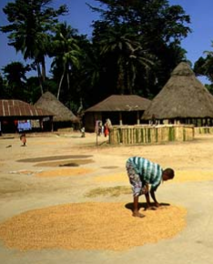
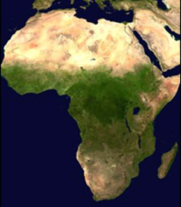
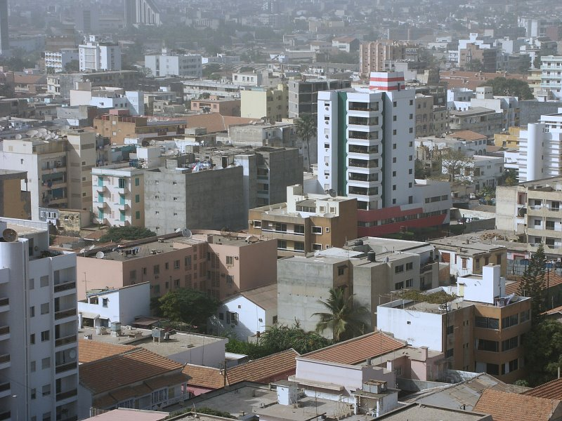

African
Literature & the On-Going Scramble
for African Labor and Resources
Drawing on modern African literature, this course will focus on the "Scramble for Africa" in the 19th century, the appropriating of African labor and resources into the present day, and the on-going consequences for Africans including the loss of land and resources, government corruption, poverty, environmental devastation, the oppression of women, lack of appropriate education and infrastructure, and civil war.
We will engage in extensive reading and discussion, participate in an on-line virtual world role play. While our focus will be on literature we will also consider essays, historical analysis, film, speakers, library and internet resources. Students will engage in diverse explorations of African life, culture, history, religion, news, politics, etc.
Students will develop blogs that connect their reading and research creating a collaborative, interactive community of learning. Blogging involves regular posting and responding to others. In literature circle groups will have freedom to extend their reading and explore related topics and literature. The final project will allow significant student creativity and choice. This section is experimental and the syllabus provisional.
This course fulfills a General Education requirement for Distribution Area IV: Other Cultures and Civilizations. This course will follow WMU procedures regarding academic honesty. Controversy and difference of opinion are welcomed. Since the class is discussion-based, attendance is essential. Missing more than three classes will effect the final grade and missing six classes will lead to failing the course.
Dr. Webb's office is 723 Sprau Tower, 387-2605, and his office hours are before class, by appointment and email at allen.webb@wmich.edu. (Feeling stress? English 314 also offers free on-line therapy from Eliza.)

Chinua Achebe, Things Fall Apart
Adam Hothschild, King Leopold's Ghost
Joseph Conrad, Heart of Darkness
Ibrahim Al-Koni, The Bleeding of the Stone
Aminatta Forna, Ancestor Stones
Sembene Ouseman, Xala
Helon Habila, Waiting for an Angel
Emmanuel Dongala, Johnny Mad Dog
two or three additional novels / literary works
 |
|
|
Electronic Syllabus
Sep 2 Tuesday Introductions
|
 |
Sep 4 Thursday Africa Before Colonialism
Develop a careful blog post on a topic in African history or culture before colonialism. Post must include: 1) several thoughful and informed paragraphs; 2) multiple links to high quality websites; and, 3) at least one image. Exceed expectations!
| Sep 9 Tuesday Things Fall Apart
Sep 11 Thursday
|
|

Sep 16 Tuesday Village of Umuofia Role Play
Sep 18 Thursday King Leopold's Ghost
|

Sep 23 Tuesday
Read King Leopold's Ghost to page 235
Africa Map Test and Answers; Study for the map test at liketolearn
| Sep 25 Thursday
|
|
| Sept 30 Tuesday Heart of Darkness
|
| Oct 2 Thursday How Europe Underdeveloped Africa
Oct 3 Friday MCTE Conference Oct 7 Tuesday
|
|

{kind=link}
{kind=link}
Oct 9 Thursday African Independence & Neocolonialism
Write a blog response: Topic in Africa and Anticolonial Struggle
Read: From The Wretched of the Earth by Frantz Fanon
| Oct 14 Tuesday New Class of African Leaders
|
 |
Oct 16 Thursday African Women
|
| Oct 21 Tuesday
Oct 23 Thursday
|
 |
Oct 28 Tuesday Blood Diamonds
|
|
Write a blog response to a topic from Ancestor Stones: loss of African religion, rise of Islam in West Africa and colonial resistance, medical care in Africa, African soldiers in WWII, female genital mutilation, gold mining in Africa, diamonds in Africa, role of traditional chiefs under colonialism during neo- colonial period, strikes against colonial rule, sterilizing of women in Africa, African students in England and France, voter fraud in Africa, war in Africa.
Oct 30 Thursday The Curse of Oil
|
Nov 4 Tuesday Read Waiting for an Angel
Write a blog response on the novel
Nov 6 Thursday
Write a blog connecting the novel to an issue in contemporary Africa
Nov 11 Tuesday African Environmental Crisis
Nov 13 Thursday
|

|
| Nov 18 Tuesday War in Africa and Child Soldiers
Nov 20 Thursday
|
| Nov 25 Tuesday
|
|
|
Nov26-30 Thanksgiving Break |
|
|
Dec 2 Tuesday: Postive Change
Dec 4 Thursday: Final Project
|
 |
Dec 8-12 Finals Week
Dec 11 Thursday 2:45-4:45 Presentation of Final Projects
Create a blog entry describing your final project that you can share with the class.
Compare our class with other Courses in African Literature
created by: allen.webb@wmich.edu
updated: 11/08